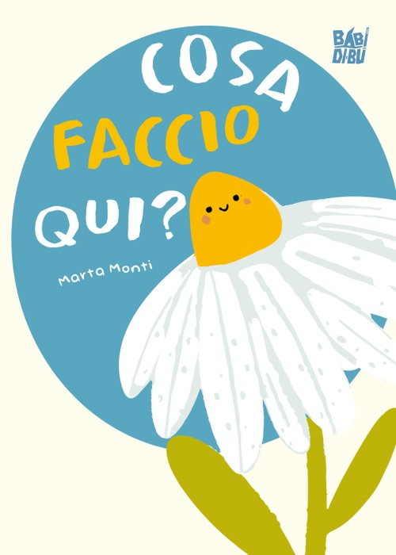

Qualcosa di nuovo ti aspetta!
Scopri di più
Cosa faccio qui?
Così, proprio come sei
Sinossi
Pillo e un piccolo fiorellino tutto arruffato e arrabbiato perché non si sente prezioso, contento e al proprio posto. Ogni volta che guarda gli altri fiori attorno a lui si vergogna e si nasconde perché si sente diverso da loro. È così arrabbiato che decide perfino di non girarsi più verso il sole. Un bel giorno, però, succede qualcosa che gli farà cambiare idea… Riuscirà Pillo a girarsi ancora verso il sole e a scoprire finalmente la sua preziosità?
Valori impliciti
Perché proprio in questa famiglia, in questa scuola, in questo mondo e in questa vita? E perché sono fatto proprio così, alle volte spettinato, altre volte triste, felice, bisognoso, corrucciato o stanco? Questo vuole essere un libro che racconta, attraverso una storia semplice, l'inarrestabile bisogno di un senso e la scoperta di un dono di cui curarsi sin da quando si viene al mondo: la propria vita.